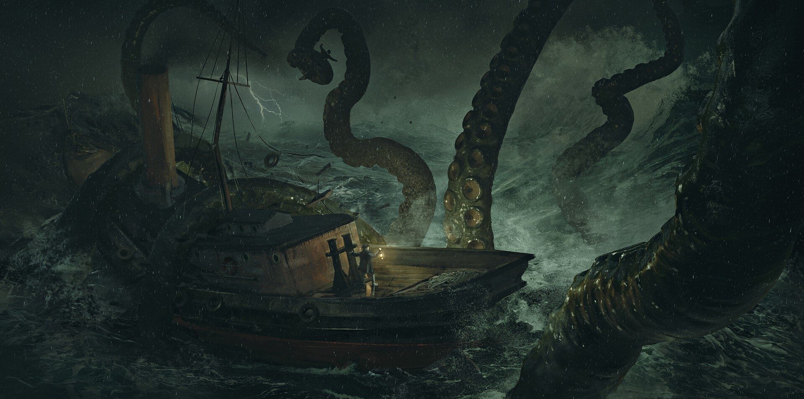
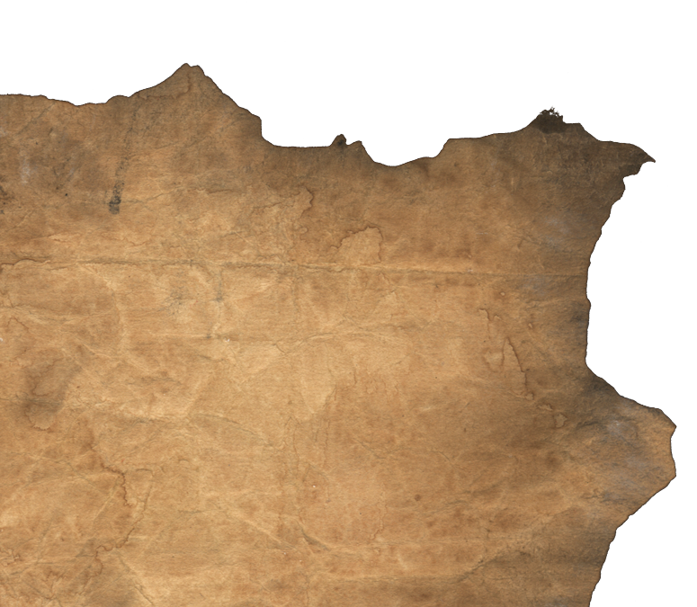

Было это в те далекие времена, когда мир еще был юн и незнаком с ужасами, скрытыми во тьме. В глубоких лабиринтах своего разума, Говард Филлипс Лавкрафт, великий мастер слова, погружался в мрачные и неизведанные уголки своей воображении.
Среди серых стен его кабинета, окруженного старинными книгами и загадочными артефактами, он ткал истории о таинственных богах и древних существах, чья сущность была скрыта от глаз лишь смельчаков, глубоко погруженных во тьму бескрайних бездн.
Слова его были словно заклинания, вызывающие страх и тревогу у дерзнувших взглянуть на мир, искривленный искаженной призмой его умственных форм. Были времена, когда Лавкрафт смотрел в бездну ада и видел в ней свои собственные кошмары, вырвавшиеся из его глубоко скрытых страхов и ужасов.


Так родились его произведения, легендарные и мистические, наполненные холодным дыханием неизведанных миров и угрозой неведомых сил. Они остались в нашем мире как древние свитки, написанные кровью и мраком, ожившие в историях и мифах, переживших Лавкрафта и все наши поколения.
И так, покорители тьмы и мрака, дерзнувшие заглянуть в бездну его мифов, обрели нечто большее, чем просто истории - они обрели взгляд на саму сущность ужаса и смерти, утвердившуюся в мире словом Лавкрафта.
Так и родился Ктулху.